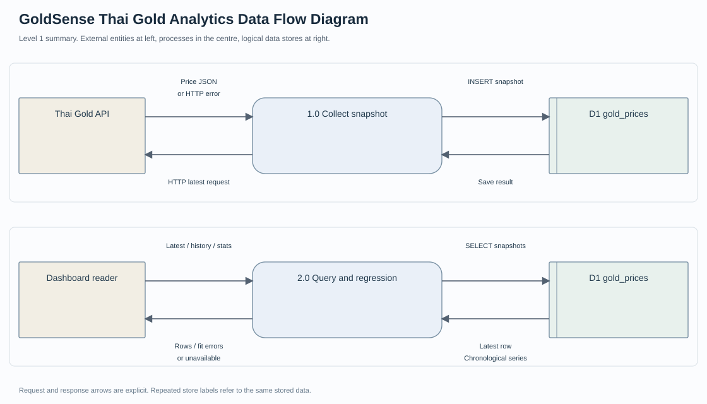

โครงงานรายวิชา · 2026
GoldSense — Thai Gold 96.5%
เว็บแสดงราคาทองไทย ข้อมูลย้อนหลัง และ Linear Regression baseline
บทบาท / สิ่งที่ทำ
ออกแบบการดึงข้อมูล การจัดเก็บ และการแสดงกราฟสำหรับติดตามราคา
ขอบเขตที่นำเสนอ
- ราคาซื้อ / ขาย
- SQLite
- Historical Chart
- Linear Regression
- MAE / RMSE
เครื่องมือและวิธีการ
ผลลัพธ์ / สิ่งที่ส่งมอบ
มี source สำหรับแสดงและสะสมข้อมูลราคาทองคำกับ baseline ที่ระบุใน README
ขอบเขตและสถานะ
ไม่อ้างความแม่นยำของโมเดลหรือประวัติราคาครบ 1 ปีโดยไม่มี dataset และการประเมินรองรับ
Data Flow และเอกสารวิเคราะห์

เอกสารใหม่จาก source baseline พร้อม Requirement, Workflow, Data Model และ UAT ที่ระบุสถานะตามจริง
กระบวนการของโครงการ
- Thai Gold API
- SQLite
- ข้อมูลย้อนหลัง
- Baseline Forecast
- Dashboard